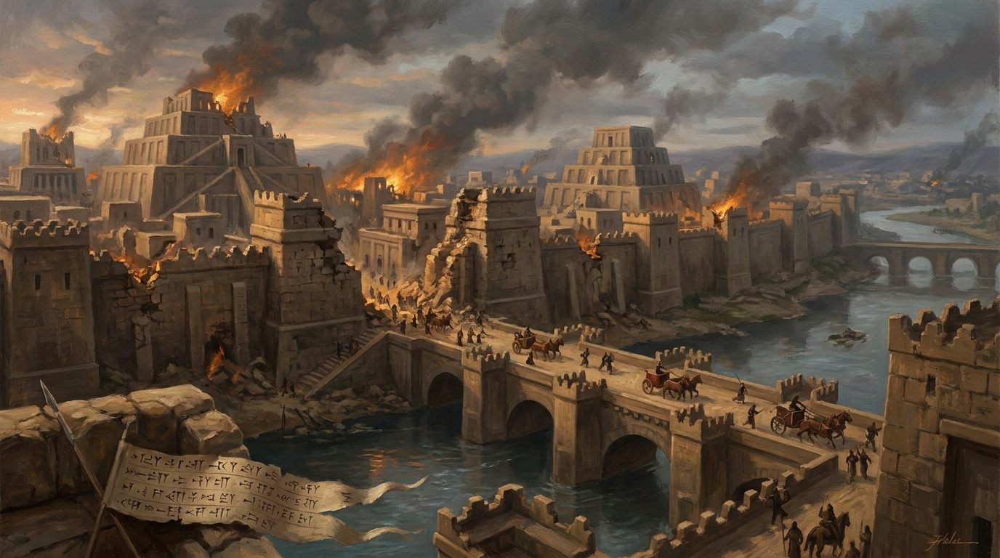

A Ira Justa e a Queda de Nínive
O livro de Naum é um poema dramático e intenso focado em um único evento: a destruição iminente de Nínive, a capital do sanguinário Império Assírio. Enquanto Jonas viu a cidade se arrepender um século antes, Naum declara que a paciência de Deus chegou ao fim diante das atrocidades e da violência assíria. O livro nos ensina que a ira de Deus não é um descontrole emocional, mas a Sua firme decisão de não permitir que o mal e a opressão durem para sempre. Para os inimigos, Ele é justiça implacável; para os que nEle confiam, Ele é refúgio seguro.
Ficha Técnica
- Autor: O profeta Naum.
- Tema Principal: A soberania e a justiça de Deus, e o julgamento definitivo sobre a cidade de Nínive.
- Versículo-Chave: "O Senhor é bom, um refúgio em tempos de angústia. Ele protege os que nele confiam, mas com enchente devastadora dará fim a Nínive; exterminará os seus inimigos na escuridão." (Naum 1:7-8)
Estrutura
- A majestade de Deus: Sua ira contra os inimigos e bondade para os Seus (Cap. 1)
- A visão profética do cerco militar e da queda de Nínive (Cap. 2)
- A denúncia dos crimes da cidade e a inevitabilidade de sua ruína (Cap. 3)